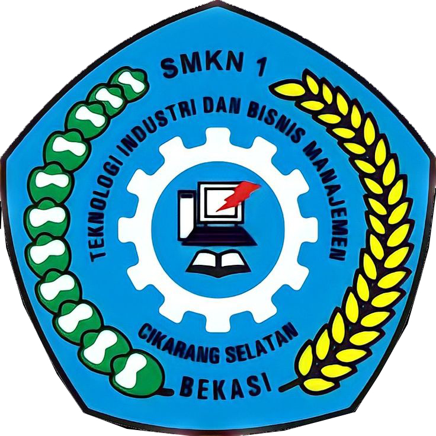

Profile
Sejarah Singkat
SMK Negeri 1 Cikarang Selatan berasal dari SMK Kecil di Cikarang Selatan yang berdiri pada tahun 2004 dengan SK (Surat Keputusan) Bupati Bekasi Nomor: 421.5/Kep.28/2004 tanggal 24 Februari 2004, pada saat itu ada 3 proyek SMK Kecil pemerintah kabupaten bekasi diantaranya yaitu wilayah kecamatan Tarumajaya, Setu dan Cikarang Selatan. SMK Kecil Cikarang Selatan masih bertempat di SMPN 1 Cikarang Selatan dikarenakan belum adanya bantuan bangunan. Adapun program jurusan yang ada pada SMK Kecil Cikarang Selatan hanya Teknik Elektronika Industri dan Rekayasa Perangkat Lunak.
Pada tahun 2005 SMK kecil cikarang selatan mendapat bantuan bangunan blok grand dari pemerintah sehingga SMK Kecil Cikarang selatan tidak lagi melakukan kegiatan pembelajaran di SMPN 1 Cikarang Selatan dan pada tanggal 20 April 2005 dikeluarkan SK Bupati Bekasi Nomor: 421/Kep.112.Disdik/2005 untuk penegerian SMK Kecil Cikarang Selatan sehingga berubah menjadi SMK Negeri 1 Cikarang Selatan.

Semakin tinggi antusiasme masyarakat dan bertambahnya jumlah siswa, SMK Negeri 1 Cikarang Selatan semakin berkembang pesat. Maka dari itu SMK Negeri 1 Cikarang Selatan membuka tambahan jurusan yaitu Teknik Pemesinan dan Akuntansi serta mengganti jurusan Teknik Rekayasa Perangkat Lunak menjadi Teknik Komputer dan Jaringan yang disebabkan karena sulitnya mencari tenaga pengajar untuk jurusan Rekayasa Perangkat Lunak. Pada tanggal 28 Oktober 2011 SK Akreditasi terakhir dengan Nomor: 02.00/694/BAP-SM/X/2011, SMK Negeri 1 Cikarang Selatan mendapat nilai jenjang Akreditasi “A” untuk semua program keahlian, yaitu: Teknik Elektronika Industri, Teknik Pemesinan, Teknik Komputer dan Jaringan dan Akuntansi.